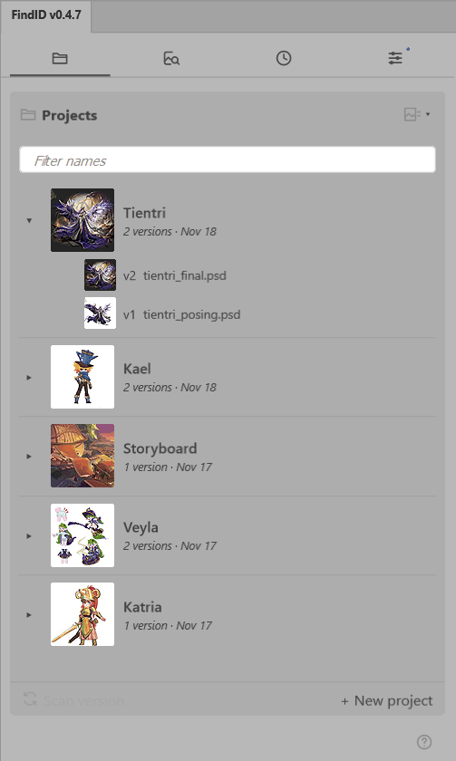

Download FindID
Tải FindID
Until the release, downloads need a tester code.
Trước ngày phát hành, cần mã dùng thử để tải.
FindID
1.99 USD
one-time purchase
mua một lần
- The FindID plug-in for Adobe Photoshop® on Windows and Mac: both packages
- Runs on your computer, no account needed
- For Windows 10 / 11 · Adobe Photoshop® 2023 (24.0) or later
- Plugin FindID cho Adobe Photoshop® trên Windows và Mac: cả hai gói
- Chạy trên máy bạn, không cần tài khoản
- Cho Windows 10 / 11 · Adobe Photoshop® 2023 (bản 24.0) trở lên
Pay by card, Apple Pay or Google Pay
Trả bằng thẻ, Apple Pay hoặc Google Pay
Use Creative Cloud? Dùng Creative Cloud? Get FindID on the Adobe StoreLấy FindID trên Adobe Store
- The FindID plug-in for Adobe Photoshop® on Windows and Mac: both packages
- Runs on your computer, no account needed
- For macOS · Adobe Photoshop® 2023 (24.0) or later
- Plugin FindID cho Adobe Photoshop® trên Windows và Mac: cả hai gói
- Chạy trên máy bạn, không cần tài khoản
- Cho macOS · Adobe Photoshop® 2023 (bản 24.0) trở lên
Pay by card, Apple Pay or Google Pay
Trả bằng thẻ, Apple Pay hoặc Google Pay
Use Creative Cloud? Dùng Creative Cloud? Get FindID on the Adobe StoreLấy FindID trên Adobe Store
By downloading FindID you agree to the Licence and Privacy terms.
Tải FindID là bạn đồng ý với Giấy phép và Chính sách riêng tư.
Not available yet.
Chưa có.
Enter your tester code to download.Nhập mã dùng thử để tải.
Code not valid.Mã không đúng.
Code accepted — download free.Mã đúng — tải miễn phí.


System requirements
Cấu hình cần có
- Windows 10 / 11
- macOS
- Adobe Photoshop® 2023 (24.0) or later
- Windows 10 / 11
- macOS
- Adobe Photoshop® 2023 (bản 24.0) trở lên
Install
Cài đặt
Windows
- Download FindID for Windows with the button above.
- Unzip the file.
- Copy the FindID folder into
C:\Program Files\Adobe\Adobe Photoshop <year>\Plug-ins\. Grant permission if your computer asks. - Open Photoshop, then Plugins > FindID.
- Tải FindID cho Windows bằng nút ở trên.
- Giải nén file.
- Chép thư mục FindID vào
C:\Program Files\Adobe\Adobe Photoshop <năm>\Plug-ins\. Cấp quyền nếu máy cần. - Mở Photoshop, rồi Plugins > FindID.
macOS
- Download FindID for Mac with the button above.
- Unzip the file.
- Copy the FindID folder into
/Applications/Adobe Photoshop <year>/Plug-ins/. Grant permission if your computer asks. - Open Photoshop, then Plugins > FindID.
- When macOS asks to let Photoshop read a folder, click Allow.
- Tải FindID cho Mac bằng nút ở trên.
- Giải nén file.
- Chép thư mục FindID vào
/Applications/Adobe Photoshop <năm>/Plug-ins/. Cấp quyền nếu máy cần. - Mở Photoshop, rồi Plugins > FindID.
- macOS hỏi cho Photoshop đọc thư mục thì bấm Allow.
Adobe Store (Creative Cloud)
- Open FindID on the Adobe Store: the Get FindID on the Adobe Store link above.
- Click Install. Creative Cloud installs FindID and keeps it up to date.
- Open Photoshop, then Plugins > FindID.
- Mở FindID trên Adobe Store: link Lấy FindID trên Adobe Store ở trên.
- Bấm Install. Creative Cloud tự cài và tự cập nhật FindID.
- Mở Photoshop, rồi Plugins > FindID.
Versions
Các phiên bản
Current version: (testing), 24 Nov 2026. Updates: from Adobe, Creative Cloud updates FindID by itself; from findid.app, download the new version with the link in your order email or on your customer page. Your projects are kept.
Phiên bản hiện tại: (đang thử nghiệm), 24/11/2026. Cập nhật: cài từ Adobe thì Creative Cloud tự cập nhật; mua tại findid.app thì tải bản mới bằng link trong email đơn hàng hoặc trang khách hàng. Dự án của bạn vẫn giữ nguyên.
-
0.5.224 Nov 2026, testing24/11/2026, đang thử nghiệm
- Settings › Scan folders and Excluded folders: Help (with a picture) on the title, the list and every row.
- A project left with no versions no longer shows the old picture.
- Mac: install by copying the FindID folder into Photoshop's Plug-ins folder, like Windows.
- Cài đặt › Thư mục quét và Thư mục bỏ qua: có Help (kèm hình) ở tiêu đề, danh sách và từng dòng.
- Dự án không còn version thì không còn hiện ảnh cũ.
- Mac: cài bằng cách chép thư mục FindID vào thư mục Plug-ins của Photoshop, giống Windows.
-
0.5.124 Nov 2026, testing24/11/2026, đang thử nghiệm
- The Help box opens right below the row you point at, lined up with it, the same way everywhere; for right-click menu items it opens next to the menu.
- No Help on the expand arrows; fewer, simpler Help pictures.
- Fixed: after switching language, version counts could stay in the old language.
- Khung Help mở ngay dưới dòng đang trỏ, thẳng hàng với dòng, chỗ nào cũng như nhau; mục trong menu chuột phải thì mở cạnh menu.
- Mũi tên xổ / gập không hiện Help; bớt hình Help rườm rà.
- Sửa: đổi ngôn ngữ xong, số version có thể vẫn giữ ngôn ngữ cũ.
-
0.5.024 Nov 2026, testing24/11/2026, đang thử nghiệm
- The Help box is compact and sits on the right, beside right-click menus (below them in a narrow panel), so it never covers the item you point at.
- Right-click menus are as wide as their text and open where you click; every menu item has Help.
- New last tour step: the ? button turns Help on and off, with its own picture.
- Plugin icons for every Photoshop theme.
- Khung Help gọn, nằm bên phải, cạnh menu chuột phải (panel hẹp thì nằm dưới menu), không che mục đang trỏ.
- Menu chuột phải rộng vừa chữ, mở ngay chỗ bấm; mục nào cũng có Help.
- Bước cuối hướng dẫn mới: nút ? bật / tắt Help, có hình riêng.
- Icon plugin cho mọi giao diện Photoshop.
-
0.4.923 Nov 2026, testing23/11/2026, đang thử nghiệm
- More Help pictures: Save As versions, images under a version, renaming files, adding files, moving between projects, merging, Not in project, Scan versions, thumbnail size, Reset data.
- Where a spot has several pictures, Help plays them one after another.
- Untracked: right-click a file to Track it on its own; the group's menu now has only Track.
- The History picture now shows just Undo.
- Thêm hình Help: Save As tạo version, ảnh dưới version, đổi tên file, thêm file, chuyển dự án, gộp dự án, Không thuộc dự án, Quét version, cỡ ảnh nhỏ, Làm mới dữ liệu.
- Chỗ nào có nhiều hình, Help chạy lần lượt từng hình.
- Chưa theo dõi: chuột phải một file để Theo dõi riêng file đó; menu của nhóm chỉ còn Theo dõi.
- Hình Lịch sử giờ chỉ còn cảnh Hoàn tác.
-
0.4.823 Nov 2026, testing23/11/2026, đang thử nghiệm
- Support button in Settings opens the FindID support page.
- The panel shows up faster when Photoshop starts.
- Tour step 2 also completes when you click the Folders to scan section.
- The Find help picture now shows just the drag into the Find box.
- Nút Hỗ trợ trong Cài đặt mở trang hỗ trợ FindID.
- Panel hiện nhanh hơn khi mở Photoshop.
- Bước 2 của hướng dẫn cũng xong khi bấm vào mục Thư mục quét.
- Hình giải thích Tìm giờ chỉ còn cảnh kéo ảnh vào ô Tìm.
-
0.4.722 Nov 2026, testing22/11/2026, đang thử nghiệm
- Find by image runs entirely inside the panel, with no extra program to allow, and it is faster.
- Cropped or resized pictures find their PSD more often; the best matches are grouped under one title.
- Help on every button with a short moving picture, and a 4-step tour for new users.
- Saving is simpler: Ctrl+S saves the version, Save As adds a newer version on top, with no question box.
- Images you save from a PSD are listed under its version; one Thumbnail button picks the picture size.
- Tìm từ ảnh chạy hẳn trong panel, không cần cho phép chương trình nào khác, và nhanh hơn.
- Ảnh đã cắt hay đổi cỡ tìm ra PSD thường hơn; các kết quả phù hợp nhất gom dưới một tiêu đề.
- Giải thích trên mọi nút kèm hình động ngắn, và 4 bước hướng dẫn cho người mới.
- Lưu đơn giản hơn: Ctrl+S lưu version, Save As thêm version mới hơn lên trên, không có hộp hỏi.
- Ảnh lưu từ một PSD nằm dưới version của nó; một nút Ảnh nhỏ để chọn cỡ hình.
-
0.4.66 Nov 2026
- Scan IDs runs inside the panel; Photoshop stays usable during a long first scan.
- Version thumbnails follow the newest save.
- Opening a file from the Untracked group makes it a new project.
- Quét ID chạy trong panel; lần quét đầu lâu thì Photoshop vẫn dùng được.
- Ảnh nhỏ của version theo lần lưu mới nhất.
- Mở một file trong nhóm Chưa theo dõi thì file đó thành dự án mới.
-
0.4.41 Nov 2026
- Thumbnails no longer flicker.
- Ảnh nhỏ hết nháy.
-
0.4.31 Nov 2026
- The Projects tab shows your projects with the Untracked group below.
- Rename a project in place: double-click its name.
- History: click any row to go back to that step.
- Tab Dự án hiện các dự án, nhóm Chưa theo dõi nằm bên dưới.
- Đổi tên dự án tại chỗ: bấm đúp vào tên.
- Lịch sử: bấm dòng nào cũng quay về bước đó.
-
0.4.231 Oct 2026
- The panel follows the document open in Photoshop: switch documents and it jumps to that project and version.
- Panel đi theo file đang mở trong Photoshop: đổi file là panel nhảy tới dự án và version của file đó.
Refunds and terms
Hoàn tiền và điều khoản
Refunds and help: Support page. Licence and privacy: Licence & Privacy.
Hoàn tiền và trợ giúp: trang Hỗ trợ. Giấy phép và riêng tư: Giấy phép & Riêng tư.